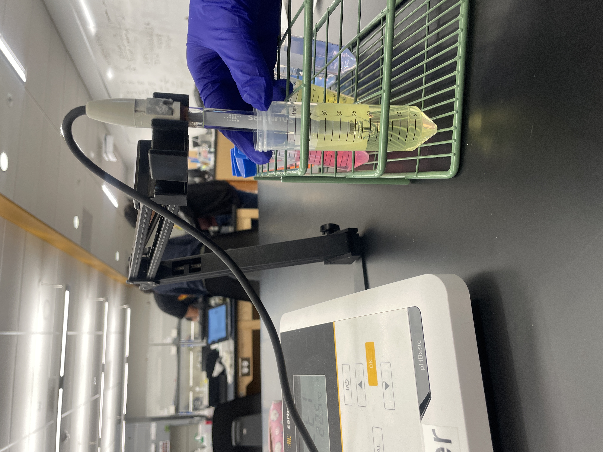

Stephanie Bautista
I am a student in a Biology major currently pursuing my Bachelors of Science degree. I previously got my Associates of Science degree in Biology. I am passionate and determined to learn more about human health, biological sciences, and research that can positively impact communities and improve quality of life.
Throughout my academic journey, there have been some challenges that have tested my patience and motivation. Dealing with unexpected life events, difficult course work, and personal responsibilities has not always been easy. However, they have not stopped me; instead it has made me stronger and more driven as an individual. They have made me want to complete this goal even more. During my time in completing this journey, I have developed strong communication, teamwork, organization and problem-solving skills through coursework, collaborative projects, and volunteer experiences. Working with others on assignments and presentations has prepared me on how important all this can be in a professional setting. I enjoy working in environments where I can contribute ideas, people support others, and continue learning new concepts related to science and healthcare. I want to be able to help people and make the world a better place. These experiences have helped me be more confident in my public speaking, and has helped me be more prepared for more opportunities that will come along in the healthcare and science related fields. One of my biggest goals is to fulfill the promise I made to my mother in making a positive difference in the lives of others. As I get closer to graduation and getting my Bachelor’s I know that she would be very proud if she was still here. I am closer to a career where I will be able to help people and contribute to improving the world around me. It can be through healthcare or laboratory research and I hope to truly help others. Although, I wish I have been able to help my mother more, I know that if I am in the healthcare setting I can help others the way I would have wanted to help her. If I am in the laboratory or research settings, I can possibly find better treatments, medications, and cures that I know could help many.
In addition to my education, I am interested in gaining hands-on experience in healthcare and laboratory settings. I know this will help my understanding of biology in real-world applications. I am motivated to continue in this academically and professionally while exploring future career opportunities in healthcare, research, or environmental science. It is very exciting the closer I get to achieving this goal. There have been times where the finish line felt very far away, but I have learned that every step forward matters. I am further than I was the day before and closer to achieving my goals with every single challenge that I have overcome and every milestone that I accomplish. This is not the end of my journey, it is only the beginning of many opportunities to come. This is not only for me but for my mom and all those who I can help if I continue down this path.
Experience
Patient Support Volunteer
• Assisted younger patients during treatmenst by creating a comforting environment
• Developed comunicatin, empathy, and interpersonal skills in a healthcare setting
• Assisted in distracting and entertaining the prediatric unit through activities
Research Lab
• Conducted hands-on experiments in a structured laboratory setting
• Developed patience, attention to detail, and time management skill
• Practiced proper lab safety and ppe and collabrated with others
Pet Grooming
• Groomed and made pets be in a safe and comfortable home environment
• Developed patience, attention to detail, and time management skills
Education
UC Riverside
Santa Ana College
Portfolio



